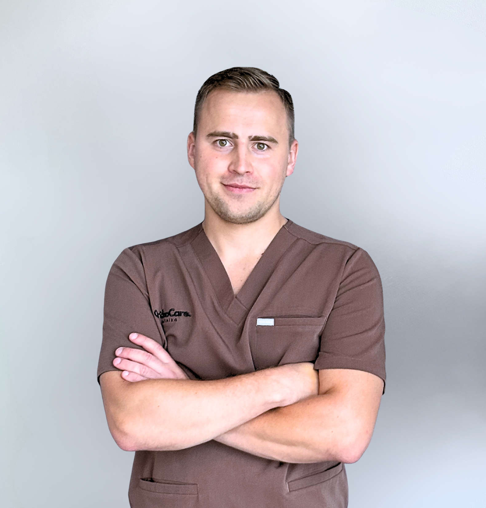

lek. Michał Zagórski
Ortopeda, w trakcie specjalizacji

Lek. Michał Zagórski jest lekarzem w trakcie specjalizacji z ortopedii i traumatologii narządu ruchu. Ukończył studia na Uniwersytecie Medycznym w Lublinie, a już w czasie nauki kierował swoje zainteresowania w stronę nowoczesnych metod diagnostyki i leczenia schorzeń układu ruchu.Od początku kariery konsekwentnie poszerza swoją wiedzę oraz doskonali umiejętności praktyczne, uczestnicząc w licznych kursach, szkoleniach i konferencjach – zarówno w Polsce, jak i za granicą. Szczególną uwagę poświęca diagnostyce ultrasonograficznej, dzięki której możliwe jest szybkie i precyzyjne rozpoznawanie urazów oraz chorób stawów i tkanek miękkich. Interesuje się także wykonywaniem iniekcji dostawowych pod kontrolą USG, co pozwala zwiększyć skuteczność i bezpieczeństwo terapii.W obszarze jego praktyki znajdują się również artroskopia oraz nowoczesne, małoinwazyjne metody leczenia urazów i schorzeń narządu ruchu. Jego celem jest nie tylko przywrócenie pacjentom sprawności fizycznej, ale także poprawa jakości ich życia poprzez indywidualnie dopasowane metody terapii.Pacjenci cenią go za profesjonalizm, rzetelność oraz empatyczne podejście. Zawsze stara się dokładnie wyjaśnić diagnozę i możliwości leczenia, angażując pacjenta w proces terapeutyczny. W codziennej praktyce kieruje się zasadą, że skuteczna opieka medyczna wymaga nie tylko wiedzy i doświadczenia, ale także otwartości i zrozumienia dla potrzeb drugiego człowieka.